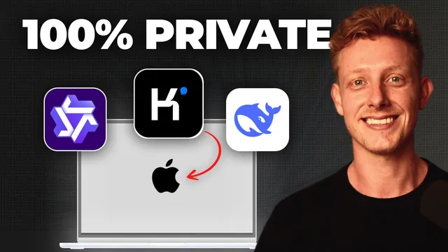

18분이면 되는 로컬 AI 구축

원본 영상 보기 →
- 오픈소스 모델 품질 상승이 로컬 AI를 실전 옵션으로 바꿨다
- 임대 서버는 "프라이버시"와 "최상위 성능"을 동시에 얻는 현실적 타협점이다
- 하니스 선택에 따라 기존 워크플로우 재사용 가능 여부가 갈린다
한 줄 요약
Kimi, DeepSeek, GLM 같은 오픈소스 모델이 프론티어 모델을 따라잡으면서, AI를 클라우드가 아니라 내 하드웨어나 내가 빌린 서버에서 직접 돌리는 "로컬 AI"가 이제 비기술자도 30분~1시간이면 세팅할 수 있는 현실적 옵션이 됐다는 내용이다.
전체 내용 정리
로컬 AI를 고려해야 하는 이유는 프라이버시와 통제권이다
클라우드 AI를 쓸 때 메시지는 결국 앤트로픽 같은 회사가 운영하는 데이터센터 서버로 전송되어 처리된다. 이게 문제가 되는 건 민감한 고객 데이터나 비즈니스 데이터를 다루는 회사, 혹은 GDPR·HIPAA 같은 규정 준수가 걸린 회사 입장에서는 제3자에게 데이터를 넘기는 리스크를 감수할 수 없기 때문이다. 로컬 AI는 데이터가 내 기기 밖으로 나가지 않게 하고, 모델이 완전히 내 소유가 되어 특정 회사가 모델을 막을 걱정도 없으며, 와이파이를 꺼도 완전히 오프라인으로 작동한다는 장점이 있다. 영상에서는 클로드 코드 터미널 안에서 클로드 소넷급 품질인 GPT-OSS를 로컬로 돌리는 모습과, goose라는 에이전트 하니스에서 Qwen 3를 로컬로 돌리는 모습을 직접 보여준다. 다만 비용은 반드시 더 저렴한 게 아니라는 점도 짚고 넘어간다.
로컬 AI를 돌리는 방법은 두 가지, 내 하드웨어 vs 임대 서버다
첫 번째 방법은 앤트로픽 서버 대신 내 노트북이나 맥미니 같은 내 하드웨어에서 직접 LLM을 구동하는 것이다. 데이터가 내 기기 밖으로 전혀 나가지 않아 완전히 프라이빗하고, 하드웨어·전기 비용을 빼면 사실상 무료이며, 완전 오프라인으로도 쓸 수 있다. 다만 개인 하드웨어의 처리력은 데이터센터에 비할 바가 못 되기 때문에 최상위급 오픈소스 모델은 돌릴 수 없다는 한계가 있다. 두 번째 방법은 데이터센터 안의 서버를 통째로 임대해서 그 위에 LLM을 올리는 것이다. 강력한 엔비디아 하드웨어를 쓰면서도 서버는 온전히 내 소유이자 보호된 공간이라, 클로드 페이블이나 GPT-5급에 맞먹는 최상위 오픈소스 모델까지 돌릴 수 있다. 대신 서버 임대 비용이 든다.
임대 서버 비용은 모델 등급에 따라 월 몇백에서 몇만 달러까지 갈린다
고정 월정액으로 계산했을 때, Kimi K2나 GLM 4.6, DeepSeek V3 같은 최상위 티어 모델을 무제한으로 쓰려면 대략 월 4,000달러에서 5만 달러까지 든다. 대신 팀 전체가 사용해도 정액 하나로 무제한 사용이 가능하다는 장점이 있다. 실제로 영상에서 시연한 GPT-OSS 설정은 한 달 기준 약 4,000달러 수준이었다. 반면 Qwen 3.6 같은 중간급 모델은 월 4달러에서 800달러 수준으로 훨씬 저렴하게 무제한 이용이 가능하다. 고정 정액 대신 쓴 만큼만 내는 사용량 기반 과금 옵션도 있는데, 이 경우 훨씬 저렴하지만 요청이 여러 서버로 분산 처리되기 때문에 100% 프라이빗한 단일 서버 소유는 아니게 된다.
내 하드웨어로는 어느 등급의 모델까지 돌릴 수 있는지가 관건이다
오픈소스 모델은 대략 3개 등급으로 나뉜다. 클로드 페이블이나 GPT-5급에 맞먹는 티어 1(Kimi K2, GLM 4.6·4.7, Qwen 3 Coder, DeepSeek V4 등)은 개인 하드웨어로는 돌릴 수 없을 만큼 용량이 크다. 클로드 소넷이나 하이쿠급인 티어 2(Qwen 3.6, Gemma 3 31B, Devstral 2 등)는 M4 칩이 들어간 맥북 프로처럼 강력한 노트북이나 맥미니에서는 돌릴 수 있지만, 컴퓨터가 눈에 띄게 느려진다. 대부분의 일반 사용자에게 현실적인 선택지는 클로드 하이쿠보다도 성능이 낮은 아주 작은 티어 3 모델이며, 이 정도는 웬만한 노트북, 심지어 스마트폰에서도 돌릴 수 있다. 이 플러그인에는 내 컴퓨터의 사양을 스캔해서 어떤 모델을 현실적으로 돌릴 수 있는지 알려주는 "scan my machine" 스킬도 포함되어 있다.
어떤 방식을 택할지는 개인용인지 팀용인지에 달려 있다
완전 로컬 방식은 저렴하지만, 지금 수준에서는 아주 작은 모델만 현실적으로 돌릴 수 있고, 대규모 하드웨어 투자를 하지 않는 이상 이 한계는 유지된다. 팀 단위로 공유하는 것도 가능하긴 하지만, 내 노트북을 항상 켜둔 채로 다른 팀원이 접속해서 써야 하고 그러면 내 컴퓨터 자체가 매우 느려진다는 현실적인 문제가 있다. 반대로 임대 서버 방식은 비용이 훨씬 크지만, 최상위 모델을 고정 가격으로 무제한 이용할 수 있고 팀원들과 공유하기도 훨씬 쉽다. 이미 팀 전체가 앤트로픽 사용료로 상당한 비용을 지출하고 있는 회사라면, 임대 서버 투자가 점점 더 합리적인 선택지가 되고 있다는 게 영상의 진단이다.
로컬 모델을 실제로 쓰려면 에이전트 하니스 선택이 중요하다
로컬 모델을 돌리기만 하고 끝나는 게 아니라, 스킬·예약 작업·커넥터 같은 기능을 그대로 쓸 수 있는 하니스에 연결해야 진짜 쓸모가 생긴다. 하니스는 크게 세 종류다. 데스크톱형(Anything LLM, LM Studio, goose 등, 이 중 goose를 특히 선호한다고 언급)은 클로드 데스크톱과 비슷하게 스킬·예약 작업·연동 기능을 갖춘 앱 형태다. 클로드 데스크톱 자체는 로컬 모델을 지원하지 않기 때문에 별도 앱이 필요하다. 터미널형은 클로드 코드나 Gemini CLI 같은 것으로, 이 중에서도 클로드 코드가 가장 강력한 하니스라 로컬 모델을 쓸 때도 가장 추천된다고 밝힌다. 실제로 임대 서버에서 GPT-OSS를 클로드 코드 터미널에 연결해 유튜브 리퍼포징 스킬과 MCP 커넥터로 유튜브 영상을 트랜스크립션하는 시연도 보여준다. 브라우저형(Open WebUI, Cloudflare, Odysius AI 등)은 기능은 가장 제한적이지만, 링크 하나만 공유하면 비기술 팀원도 별도 설치 없이 바로 쓸 수 있다는 장점이 있다.
이 모든 세팅을 스킬 두 개로 30분~1시간 안에 자동화할 수 있다
"로컬 AI 세팅" 스킬을 실행하면 먼저 내 컴퓨터 사양을 스캔하고, 개인용인지 팀용인지 등 몇 가지 질문을 한 뒤 최적의 모델과 하니스를 추천해준다. 확정하면 추론 엔진인 Ollama 설치, 언어 모델 다운로드(영상에서는 Qwen 3.6 27B 파라미터 모델), 그리고 선택한 하니스 설치까지 자동으로 진행되고, 끝나면 요약 리포트와 함께 브라우저 하니스를 골랐다면 바로 접속 가능한 URL까지 제공한다. "임대 서버 세팅" 스킬은 비슷한 흐름이지만, 어떤 모델을 쓸지, 팀용인지 개인용인지, 고정 월정액인지 사용량 기반인지를 먼저 묻는다. 이후 유럽 기반이라 GDPR 준수에 유리한 OVHCloud와 미국 기반인 RunPod 중 하나를 고르게 하고(영상에서는 RunPod 선택), API 키를 발급받아 붙여넣으면 모델별 예상 비용까지 계산해준다(영상 예시는 GPT-OSS 한 달 약 3,300달러). 이후 서버 생성, 모델 다운로드, 하니스 설치까지 전부 자동으로 진행되며, 클로드 코드를 하니스로 골랐다면 붙여넣기만 하면 되는 커맨드라인을, 브라우저 하니스를 골랐다면 팀과 공유할 링크를 제공한다.
핵심 인사이트
- 오픈소스 모델 품질 상승이 로컬 AI를 실전 옵션으로 바꿨다: 1년 전만 해도 노트북에서 돌릴 수 있는 모델 수준은 지금과 비교가 안 될 만큼 낮았다. 이 흐름이 계속되면 프라이버시 요구가 있는 기업일수록 로컬 AI 검토가 선택이 아니라 필수가 될 가능성이 크다.
- 임대 서버는 "프라이버시"와 "최상위 성능"을 동시에 얻는 현실적 타협점이다: 완전 로컬은 저렴하지만 성능이 제한적이고, 클라우드 AI는 성능은 좋지만 데이터가 외부로 나간다. 임대 서버는 비용을 지불하는 대신 이 둘 사이의 간극을 메워준다.
- 하니스 선택에 따라 기존 워크플로우 재사용 가능 여부가 갈린다: 같은 로컬 모델이라도 어떤 하니스에 물리느냐에 따라 스킬·예약 작업·MCP 커넥터를 그대로 쓸 수 있는지가 달라진다. 클로드 코드처럼 기능이 풍부한 하니스를 선택해야 로컬 모델 전환의 손실을 최소화할 수 있다.
오늘 당장 해볼 것
- Ollama를 노트북에 설치하고 티어 3급 소형 오픈소스 모델 하나를 받아, goose나 클로드 코드 같은 하니스에 연결해 실제로 스킬이 작동하는지 직접 테스트해본다.
- 우리 팀이 한 달에 클로드·GPT 등 클라우드 AI에 실제로 얼마를 쓰고 있는지 합산해보고, RunPod나 OVHCloud의 티어 2 모델 고정가(월 4~800달러대)와 비교해 손익분기점을 계산해본다.
- 다루는 고객·업무 데이터가 GDPR·HIPAA 같은 컴플라이언스 이슈에 해당하는지 점검하고, 해당된다면 리전을 선택할 수 있는 임대 서버 옵션(OVHCloud 등)을 리서치 목록에 올려둔다.